%%capture
!pip install -qU matplotlib rioxarray xrscipy scikit-image5 Transformations spatiales
5.1 Préambule
Assurez-vous de lire ce préambule avant d’exécutez le reste du notebook.
5.1.1 Objectifs
Dans ce chapitre, nous abordons quelques techniques de traitement d’images dans le domaine spatial uniquement. Ce chapitre est aussi disponible sous la forme d’un notebook Python sur Google Colab:

5.1.2 Librairies
Les librairies utilisées dans ce chapitre sont les suivantes:
Dans l’environnement Google Colab, seul rioxarray doit être installés:
Vérifier les importations:
import numpy as np
import numpy.fft
import rioxarray as rxr
from scipy import signal, ndimage
import xarray as xr
import xrscipy
import matplotlib.pyplot as plt
from skimage import data, measure, graph, segmentation, color
from skimage.color import rgb2gray
from skimage.segmentation import slic, mark_boundaries
import pandas as pd5.1.3 Images utilisées
Nous allons utilisez les images suivantes dans ce chapitre:
%%capture
import gdown
gdown.download('https://drive.google.com/uc?export=download&confirm=pbef&id=1a6Ypg0g1Oy4AJt9XWKWfnR12NW1XhNg_', output= 'RGBNIR_of_S2A.tif')
gdown.download('https://drive.google.com/uc?export=download&confirm=pbef&id=1a4PQ68Ru8zBphbQ22j0sgJ4D2quw-Wo6', output= 'landsat7.tif')
gdown.download('https://drive.google.com/uc?export=download&confirm=pbef&id=1_zwCLN-x7XJcNHJCH6Z8upEdUXtVtvs1', output= 'berkeley.jpg')
gdown.download('https://drive.google.com/uc?export=download&confirm=pbef&id=1dM6IVqjba6GHwTLmI7CpX8GP2z5txUq6', output= 'SAR.tif')Vérifiez que vous êtes capable de les lire :
with rxr.open_rasterio('berkeley.jpg', mask_and_scale= True) as img_rgb:
print(img_rgb)
with rxr.open_rasterio('RGBNIR_of_S2A.tif', mask_and_scale= True) as img_rgbnir:
print(img_rgbnir)
with rxr.open_rasterio('SAR.tif', mask_and_scale= True) as img_SAR:
print(img_SAR)5.2 Analyse fréquentielle
L’analyse fréquentielle, issue du traitement du signal, permet d’avoir un autre point de vue sur les données à partir de ses composantes harmoniques. La modifications de ces composantes de Fourier modifie l’ensemble de l’image et permet de corriger des problèmes systématiques comme des artefacts ou du bruit de capteur. Bien que ce domaine soit un peu éloigné de la télédétection, les images issues des capteurs sont toutes sujettes à des étapes de traitement du signal et il faut donc en connaître les grands principes afin de pouvoir comprendre certains enjeux lors des traitements.
5.2.1 La transformée de Fourier
La transformée de Fourier permet de transformer une image dans un espace fréquentielle. Cette transformée est complètement reversible. Dans le cas des images numériques, on parle de 2D-DFT (2D-Discrete Fourier Transform) qui est un algorithme optimisé pour le calcul fréquentiel (Cooley et Tukey 1965). La 1D-DFT peu s’écrire simplement comme une projection sur une série d’exponentielles complexes:
\[X[k] = \sum_{n=0 \ldots N-1} x[n] \times \exp(-j \times 2\pi \times k \times n/N)) \tag{5.1}\]
La transformée inverse prend une forme similaire:
\[x[k] = \frac{1}{N}\sum_{n=0 \ldots N-1} X[n] \times \exp(j \times 2\pi \times k \times n/N)) \tag{5.2}\]
Le signal d’origine est donc reconstruit à partir d’une somme de sinusoïdes complexes \(\exp(j2\pi \frac{k}{N}n))\) de fréquence \(k/N\). Noter qu’à partir de \(k=N/2\), les sinusoïdes se répètent à un signe près et forme un miroir des composantes, la convention est alors de mettre ces composantes dans une espace négatif \([-N/2,\ldots,-1]\).
Dans le cas d’un simple signal périodique à une dimension avec une fréquence de 4/16 (donc 4 périodes sur 16) on obtient deux pics de fréquence à la position de 4 cycles observés sur \(N=16\) observations. Les puissances de Fourier sont affichés dans un espace fréquentiel en cycles par unité d’espacement de l’échantillon (avec zéro au début) variant entre -1 et +1. Par exemple, si l’espacement des échantillons est en secondes, l’unité de fréquence est cycles/seconde (ou Hz). Dans le cas de N échantillons, le pic sera observé à la fréquence \(+/- 4/16=0.25\) cycles/secondes. La fréquence d’échantillonnage \(F_s\) du signal a aussi beaucoup d’importance aussi et doit être au moins a deux fois la plus haute fréquence observée (ici \(F_s > 0.5\)) sinon un phénomène de repliement appelé aliasing sera observé.
import math
Fs= 2.0
Ts= 1/Fs
N= 16
arr = xr.DataArray(np.sin(2*math.pi*np.arange(0,N,Ts)*4/16),
dims=('x'), coords={'x': np.arange(0,N,Ts)})
fourier = np.fft.fft(arr)
freq = np.fft.fftfreq(fourier.size, d=Ts)
fourier = xr.DataArray(fourier,
dims=('f'), coords={'f': freq})
fig, axes = plt.subplots(nrows=1, ncols=2, figsize=(10, 4))
plt.subplot(1, 2, 1)
arr.plot.line(color='red', linestyle='dashed', marker='o', markerfacecolor='blue')
axes[0].set_title("Signal périodique")
plt.subplot(1, 2, 2)
np.abs(fourier).plot.line(color='red', linestyle='dashed', marker='o', markerfacecolor='blue')
axes[1].set_title("Composantes de Fourier (amplitude)")
plt.show()
5.2.2 Filtrage fréquentielle
Un filtrage fréquentiel consiste à modifier le spectre de Fourier afin d’éliminer ou de réduire certaines composantes fréquentielles. On peut distinguer trois grandes catégories de filtres fréquentiels:
Les filtres passe-bas qui ne préservent que les basses fréquences pour, par exemple, lisser une image.
Les filtres passe-hauts qui ne préservent que les hautes fréquences pour ne préserver que les détails.
Les filtres passe-bandes qui vont préserver les fréquences dans une bande de fréquence particulière.
La librairie Scipy contient différents filtres fréquentielles. Notez, qu’un filtrage fréquentielle est une simple multiplication de la réponse du filtre \(F[k]\) par les composantes fréquentielles du signal à filtrer \(X[k]\):
\[ X_f[k] = F[k] \times X[k] \tag{5.3}\]
À noter que cette multiplication dans l’espace de Fourier est équivalente à une opération de convolution dans l’espace originale du signal \(x\):
\[ x_f = IDFT^{-1}[F]*x \tag{5.4}\]
fig, (ax1, ax2) = plt.subplots(1, 2, figsize=(10, 4))
input_ = numpy.fft.fft2(img_rgb.to_numpy())
result = [ndimage.fourier_gaussian(input_[b], sigma=4) for b in range(3)] # on filtre chaque bande avec un filtre Gaussien
result = numpy.fft.ifft2(result)
ax1.imshow(img_rgb.to_numpy().transpose(1, 2, 0).astype('uint8'))
ax1.set_title('Originale')
ax2.imshow(result.real.transpose(1, 2, 0).astype('uint8')) # La partie imaginaire n'est pas utile ici
ax2.set_title('Filtrage Gaussien')
plt.show()
5.2.3 L’aliasing
L’aliasing est un problème fréquent en traitement du signal. Il résulte d’une fréquence d’échantillonnage trop faible par rapport au contenu fréquentielle du signal. Ceci peut se produire lorsque vous sous-échantillonner fortement une image avec un facteur de décimation (par exemple 1 pixel sur 2). En prenant un pixel sur 2, on réduit la fréquence d’échantillonnage d’un facteur 2 ce qui nous impose de réduire le contenu fréquentielle de l’image et donc les fréquences maximales de l’image. L’image présente alors un aspect faussement texturée avec beaucoup de haute fréquences:
fig, axes = plt.subplots(nrows=1, ncols=2, figsize=(10, 4))
plt.subplot(1, 2, 1)
img_rgb.astype('int').plot.imshow(rgb="band")
axes[0].set_title("Originale")
plt.subplot(1, 2, 2)
img_rgb[:,::4,::4].astype('int').plot.imshow(rgb="band")
axes[1].set_title("Décimée par un facteur 4")
plt.show()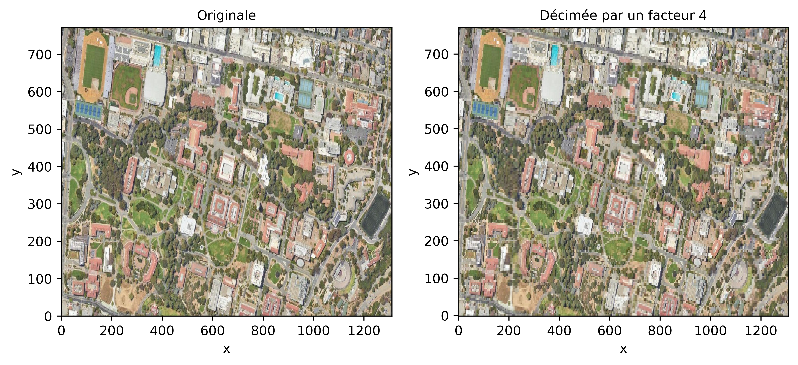
Une façon de réduire le contenu fréquentiel est de filtrer par un filtre passe-bas pour réduire les hautes fréquences par exemple avec un filtre Gaussien:
from scipy.ndimage import gaussian_filter
q= 4
sigma= q*1.1774/math.pi
arr = xr.DataArray(gaussian_filter(img_rgb.to_numpy(), sigma= (0,sigma,sigma)), dims=('band',"y", "x"), coords= {'x': img_rgb.coords['x'], 'y': img_rgb.coords['y'], 'spatial_ref': 0})
fig, axes = plt.subplots(nrows=1, ncols=2, figsize=(10, 4))
plt.subplot(1, 2, 1)
img_rgb.astype('int').plot.imshow(rgb="band")
axes[0].set_title("Originale")
plt.subplot(1, 2, 2)
arr[:,::q,::q].astype('int').plot.imshow(rgb="band")
axes[1].set_title("Décimée par un facteur 4")
plt.show()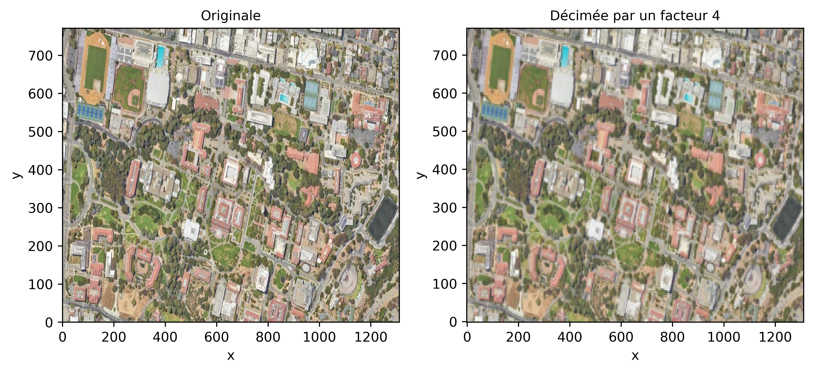
La fonction decimate dans scipy.signal réalise l’opération de décimation (downsampling) en une seule étape:
import xrscipy.signal as dsp
fig, axes = plt.subplots(nrows=1, ncols=2, figsize=(10, 4))
plt.subplot(1, 2, 1)
img_rgb.astype('int').plot.imshow(rgb="band")
axes[0].set_title("Originale")
plt.subplot(1, 2, 2)
dsp.decimate(img_rgb, q=4, dim='x').astype('int').plot.imshow(rgb="band")
axes[1].set_title("Décimée par un facteur 4")Text(0.5, 1.0, 'Décimée par un facteur 4')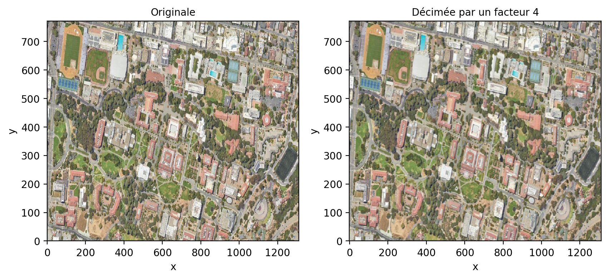
5.3 Filtrage d’image
Le filtrage d’image a plusieurs objectifs en télédétection:
La réduction du bruit afin d’améliorer la résolution radiométrique et améliorer la lisibilité de l’image.
Le réhaussement de l’image afin d’améliorer le contraste ou faire ressortir les contours.
La production de nouvelles caractéristiques: c.à.d dériver de nouvelles images mettant en valeur certaines informations dans l’image comme la texture, les contours, etc.
Il existe de nombreuses méthodes de filtrage dans la littérature, on peut rassembler ces filtres en quatre grandes catégories:
Le filtrage peut-être global ou local, c.à.d prendre en compte toute l’image pour filtrer (ex: filtrage par Fourier) ou seulement localement avec une fenêtre ou un voisinage local.
La fonction de filtrage peut-être linéaire ou non linéaire.
La fonction de filtrage peut être stationnaire ou adaptative
Le filtrage peut-être mono-échelle ou multi-échelles
La librairie Scipy (Multidimensional image processing (scipy.ndimage)) contient une panoplie complète de filtres.
5.3.1 Filtrage linéaire stationnaire
Un filtrage linéaire stationnaire consiste à appliquer une même pondération locale des valeurs des pixels dans une fenêtre glissante. La taille de cette fenêtre est généralement un chiffre impaire (3,5, etc.) afin de définir une position centrale et une fenêtre symétrique. La valeur calculée à partir de tous les pixels dans la fenêtre est alors attribuée au pixel central.
Le filtre le plus simple est certainement le filtre moyen qui consiste à appliquer le même poids uniforme dans la fenêtre glissante. Par exemple pour un filtre 5x5:
\[ F= \frac{1}{25}\left[ \begin{array}{c|c|c|c|c} 1 & 1 & 1 & 1 & 1 \\ \hline 1 & 1 & 1 & 1 & 1 \\ \hline 1 & 1 & 1 & 1 & 1 \\ \hline 1 & 1 & 1 & 1 & 1 \\ \hline 1 & 1 & 1 & 1 & 1 \end{array} \right] \tag{5.5}\]
En python, on dispose des fonctions rolling et sliding_window définis dans la librairie numpy. Par exemple pour le cas du filtre moyen on peut construire une nouvelle vue de l’image avec deux nouvelles dimensions x_win et y_win:
rolling_win = img_rgb.rolling(x=5, y=5, min_periods= 3, center= True).construct(x="x_win", y="y_win", keep_attrs= True)
print(rolling_win[0,0,1,...])
print(rolling_win.shape)<xarray.DataArray (x_win: 5, y_win: 5)> Size: 100B
array([[ nan, nan, nan, nan, nan],
[ nan, nan, 209., 210., 209.],
[ nan, nan, 213., 214., 212.],
[ nan, nan, 213., 212., 210.],
[ nan, nan, 210., 209., 206.]], dtype=float32)
Coordinates:
band int64 8B 1
x float64 8B 1.5
y float64 8B 0.5
spatial_ref int64 8B 0
Dimensions without coordinates: x_win, y_win
(3, 771, 1311, 5, 5)L’avantage de cette approche est qu’il n’y a pas d’utilisation inutile de la mémoire. Noter les nan sur les bords de l’image car la fenêtre déborde sur les bordures de l’image. Par la suite un opérateur moyenne peut être appliqué sur les axes x_win et y_win correspondant aux fenêtres glissantes.
filtre_moyen= rolling_win.mean(dim= ['x_win', 'y_win'], skipna= True)
fig, ax = plt.subplots(nrows=1, ncols=1, figsize=(8, 4))
filtre_moyen.astype('int').plot.imshow(rgb="band")
ax.set_title("Filtre moyen 5x5")Text(0.5, 1.0, 'Filtre moyen 5x5')
Lorsque la taille \(W\) de la fenêtre devient trop grande, il est préférable d’utiliser une convolution dans le domaine fréquentielle. La fonction fftconvolve de la librairie scipy.signal permet de faire cela:
kernel = np.outer(signal.windows.gaussian(70, 8),
signal.windows.gaussian(70, 8))
blurred = signal.fftconvolve(img_rgb, kernel, mode='same')5.3.1.1 Filtrage par convolution
La façon la plus efficace d’appliquer un filtre linéaire est d’appliquer une convolution. La convolution est généralement très efficace car elle est peut être calculée dans le domaine fréquentielle. Prenons l’exemple du filtre de Scharr (Jahne et S. 1999), ce filtre permet de détecter les contours horizontaux et verticaux:
\[ F= \left[ \begin{array}{ccc} -3-3j & 0-10j & +3-3j \\ -10+0j & 0+0j & +10+0j \\ -3+3j & 0+10j & +3+3j \end{array} \right] \tag{5.6}\]
Remarquez l’utilisation de chiffres complexes afin de passer deux filtres différents sur la partie réelle et imaginaire.
scharr = np.array([[ -3-3j, 0-10j, +3 -3j],
[-10+0j, 0+ 0j, +10 +0j],
[ -3+3j, 0+10j, +3 +3j]]) # Gx + j*Gy
print(img_rgb.isel(band=0).shape)
grad = signal.convolve2d(img_rgb.isel(band=0), scharr, boundary='symm', mode='same')
# on reconstruit un xarray à partir du résultat:
arr = xr.DataArray(np.abs(grad), dims=("y", "x"), coords= {'x': img_rgb.coords['x'], 'y': img_rgb.coords['y'], 'spatial_ref': 0})
print(arr)
fig, ax = plt.subplots(nrows=1, ncols=1, figsize=(8, 4))
arr.plot.imshow()
ax.set_title("Amplitude du filtre de Scharr")(771, 1311)
<xarray.DataArray (y: 771, x: 1311)> Size: 8MB
array([[ 65.96969001, 58.85575588, 54.91812087, ..., 1474. ,
1037.01205393, 389.99487176],
[ 61.07372594, 39.8246155 , 89.18520057, ..., 1763.79647352,
864.92543031, 270.20362692],
[ 98.48857802, 112.44554237, 168.10710871, ..., 2110.61365484,
870.36658943, 204.40156555],
...,
[ 143.17821063, 597.00753764, 2479.42977315, ..., 216.00925906,
248.33847869, 200.89798406],
[ 106.07544485, 393.67245268, 2188.78824924, ..., 124.96399481,
159.90622252, 346.34087255],
[ 41.59326869, 229.05894438, 1845.1216762 , ..., 175.16278143,
33.37663854, 414.3911196 ]])
Coordinates:
* x (x) float64 10kB 0.5 1.5 2.5 ... 1.308e+03 1.31e+03 1.31e+03
* y (y) float64 6kB 0.5 1.5 2.5 3.5 4.5 ... 767.5 768.5 769.5 770.5
spatial_ref int64 8B 0Text(0.5, 1.0, 'Amplitude du filtre de Scharr')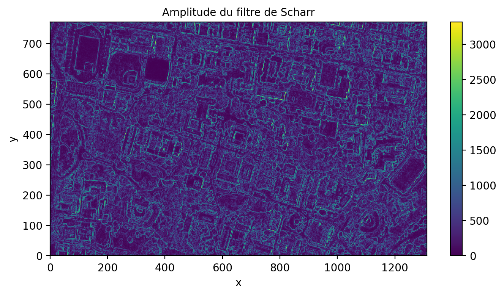
5.4 Gestion des bordures
L’application de filtres à l’intérieur de fenêtres glissantes implique de gérer les bords de l’image car la fenêtre de traitement va nécessairement déborder de quelques pixels en dehors de l’image (généralement la moitié de la fenêtre déborde). On peut soit décider d’ignorer les valeurs en dehors de l’image en imposant une valeur nan, prolonger l’image de quelques lignes et colonnes avec des valeurs mirroirs ou constantes.
5.4.0.1 Filtrage par une couche convolutionnelle
Installation de Pytorch
Cette section nécessite la librairie Pytorch avec un GPU et ne fonctionnera que sur Colab. On peut quand même installer une version locale CPU de pytorch: pip install -qU torch==2.4.0+cpu
Une couche convolutionnelle est simplement un ensemble de filtres appliqués sur la donnée d’entrée. Ce type de filtrage est à la base des réseaux dits convolutionnels qui seront abordés dans le tome 2. On peut ici imposer les mêmes filtres de gradient dans la couche convolutionnelle:
import torch
import torch.nn as nn
import numpy as np
import matplotlib.pyplot as plt
normalized_img= torch.tensor(img_rgb.to_numpy())
nchannels= normalized_img.size()[0] # nombre de canaux de l'image
# On forme une couche convolutionnelle
conv_layer = nn.Conv2d(in_channels= nchannels, out_channels=2, kernel_size=3, padding=1, stride=1, dilation= 1)
# Filtre de Sobel
sobel_x = np.array([[-3, 0, 3], [-10, 0, 10], [-3, 0, 3]])
sobel_y = np.array([[-3, -10, -3], [0, 0, 0], [3, 10, 3]])
# Le filtre (kernel) est formé de deux filtres
kernel = np.stack([sobel_x, sobel_y])
kernel = kernel.reshape(2, 1, 3, 3)
# On répète le filtre pour chaque bande
kernel = np.tile(kernel,(1,nchannels,1,1))
print(kernel.shape)
kernel = torch.as_tensor(kernel,dtype=torch.float32)
conv_layer.weight = nn.Parameter(kernel)
conv_layer.bias = nn.Parameter(torch.zeros(2,))
input= normalized_img.unsqueeze(0) # il faut ajouter une dimension pour le nombre d'échantillons
print(input.shape)
# Visualize the filters
fig, axs = plt.subplots(1, 2, figsize=(8, 5))
for i in range(2):
axs[i].imshow(conv_layer.weight.data.numpy()[i, 0])
axs[i].set_title(f'Filtre {i+1}')
plt.show()(2, 3, 3, 3)
torch.Size([1, 3, 771, 1311])
Le résultat est alors calculé sur GPU (si disponible):
import torch
import matplotlib.pyplot as plt
output = conv_layer(input)
print(f'Image (BxCxHxW): {input.shape}')
print(f'Sortie (BxFxHxW): {output.shape}')
fig, axs = plt.subplots(1, 2, figsize=(20, 5))
for i in range(2):
axs[i].imshow(output.detach().data.numpy()[0,i], vmin=-5000, vmax=5000, cmap= 'gray')
axs[i].set_title(f'Filtrage {i+1}')
plt.show()Image (BxCxHxW): torch.Size([1, 3, 771, 1311])
Sortie (BxFxHxW): torch.Size([1, 2, 771, 1311])
5.4.1 Filtrage adaptatif
Les filtrages adaptatifs consistent à appliquer un traitement en fonction du contenu local d’une image. Le filtre n’est alors plus stationnaire et sa réponse peut varier en fonction du contenu local. Ce type de filtre est très utilisé pour filtrer les images SAR (Synthetic Aperture Radar) qui sont dégradées par un bruit multiplicatif que l’on appelle speckle. On peut voir un exemple d’une image Sentinel-1 (bande HH) sur la région de Montréal, remarquée que l’image est affichée en dB en appliquant la fonction log10.
print(img_SAR.rio.resolution())
print(img_SAR.rio.crs)
fig, axs = plt.subplots(1, 1, figsize=(6, 4))
xr.ufuncs.log10(img_SAR.sel(band=1).drop("band")).plot()
axs.set_title("Image SAR Sentinel-1 (dB)")(0.00029254428869762705, -0.000287092818453516)
EPSG:4326Text(0.5, 1.0, 'Image SAR Sentinel-1 (dB)')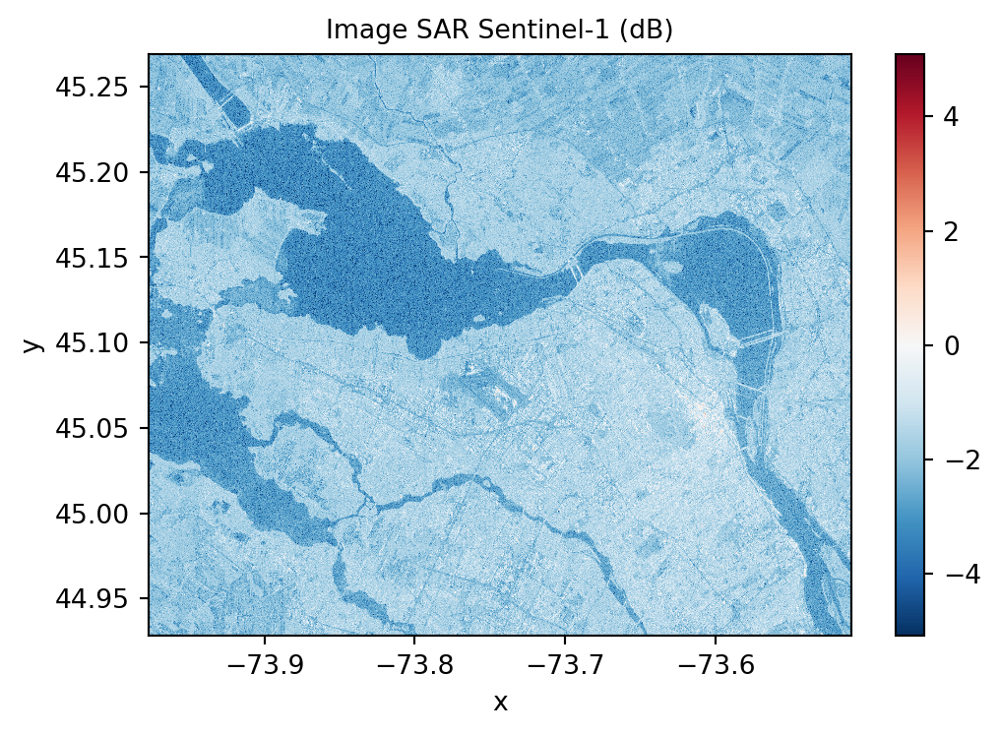
Un des filtres les plus simples pour réduire le bruit est d’appliquer un filtre moyenne, par exemple un \(5 \times 5\) ci dessous:
rolling_win = img_SAR.sel(band=2).rolling(x=5, y=5, min_periods= 3, center= True).construct(x="x_win", y="y_win", keep_attrs= True)
filtre_moyen= rolling_win.mean(dim= ['x_win', 'y_win'], skipna= True)
fig, axs = plt.subplots(1, 1, figsize=(6, 4))
xr.ufuncs.log10(filtre_moyen).plot.imshow()
axs.set_title("Filtrage moyen 5x5 (dB)")Text(0.5, 1.0, 'Filtrage moyen 5x5 (dB)')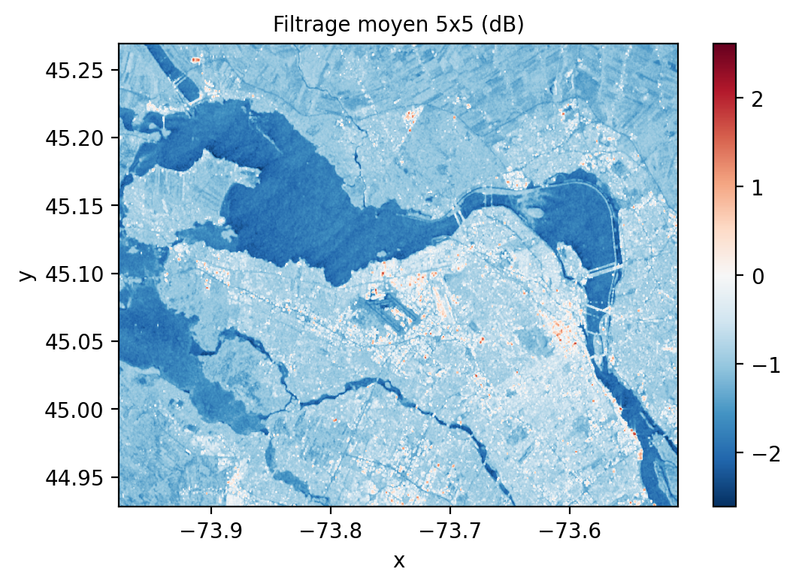
Au lieu d’appliquer un filtre moyen de manière indiscriminée, le filtre de Lee (Lee 1986) applique une pondération en fonction du contenu local de l’image \(I\) dans sa forme la plus simple:
\[ \begin{aligned} I_F & = I_M + K \times (I - I_M) \\ K & = \frac{\sigma^2_I}{\sigma^2_I + \sigma^2_{bruit}} \end{aligned} \tag{5.7}\]
Ainsi si la variance locale est élevée \(K\) s’approche de \(1\) préservant ainsi les détails de l’image \(I\) sinon l’image moyenne \(I_M\) est appliquée.
rolling_win = img_SAR.sel(band=2).rolling(x=5, y=5, min_periods= 3, center= True).construct(x="x_win", y="y_win", keep_attrs= True)
filtre_moyen= rolling_win.mean(dim= ['x_win', 'y_win'], skipna= True)
ecart_type= rolling_win.std(dim= ['x_win', 'y_win'], skipna= True)
cv= ecart_type/filtre_moyen
ponderation = (cv - 0.25) / cv
fig, axes = plt.subplots(nrows=1, ncols=2, figsize=(10, 4), sharex=True, sharey=True)
plt.subplot(1, 2, 1)
cv.plot.imshow( vmin=0, vmax=2)
axes[0].set_title("CV")
plt.subplot(1, 2, 2)
ponderation.plot.imshow( vmin=0, vmax=1)
axes[1].set_title("Pondération")
plt.tight_layout()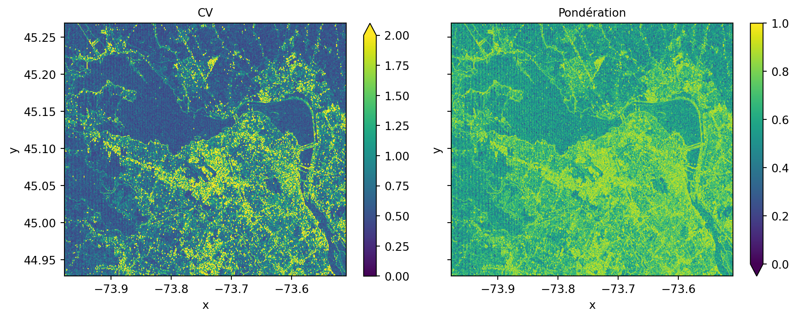
On zoomant sur l’image on peut clairement voir que les détails de l’image sont mieux préservés:
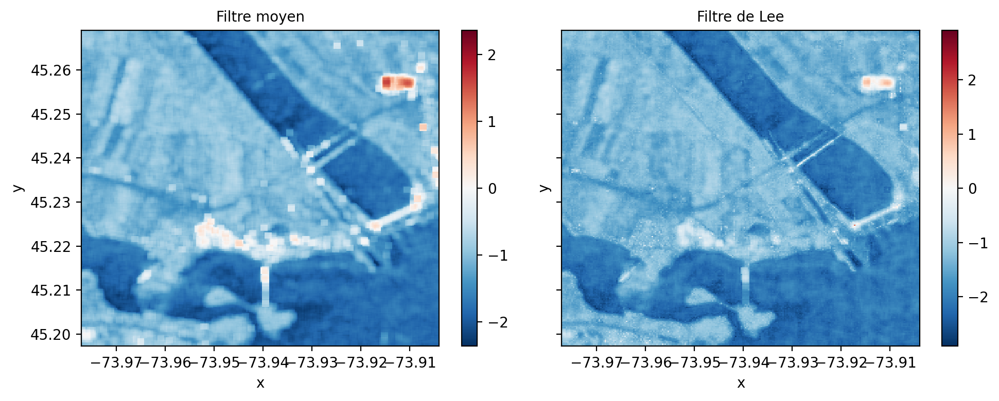
5.5 Segmentation
La segmentation d’image consiste à séparer une image en régions homogènes spatialement connexes (segments) où les valeurs sont uniformes selon un certain critère (couleurs, texture, etc.). Une image présente généralement beaucoup de pixels redondants, l’intérêt de ce type de méthode est essentiellement de réduire la quantité de pxiels nécessaire. En télédétection, on parle souvent d’approche objet. En vision par ordinateur, on parle parfois de super-pixel. Il existe de nombreuses méthodes de segmentation, la librairie sickit-image rend disponible plusieurs implémentations sur des images RVB (Comparison of segmentation and superpixel algorithms — skimage 0.25.0 documentation).
5.5.1 Super-pixel
Ce type de méthode cherche à former des régions homogènes et compactes dans l’image (Achanta et Süsstrunk 2012). Une des méthodes les plus simples est la méthode SLIC (Simple Linear Iterative Clustering), elle combine un regroupement de type K-moyenne avec une distance hybride qui prend en compte les différences de couleur entre pixels mais aussi leur distance par rapport centre du super-pixel:
Décomposer l’image en N régions régulières de taille \(S \times S\)
Initialiser les centres \(C_k\) de chaque segment \(k\)
Rechercher les pixels qui ont la distance la plus petite dans une région \(2S \times 2S\):
\[ D_{SLIC}= d_{couleur} + \frac{m}{S}d_{xy} \]
- Mettre à jour les centre \(C_k\) de chaque segment \(k\), retourner à l’étape 3
Les régions évoluent rapidement avec les itérations, plus le poids \(m\) est élevé, plus la forme du super-pixel est contrainte et ne suivra pas vraiment le contenu de l’image:
img = img_rgb.to_numpy().astype('uint8').transpose(1,2,0)
segments_slic1 = slic(img, n_segments=250, compactness=10, sigma=1, start_label=1, max_num_iter=1)
segments_slic2 = slic(img, n_segments=250, compactness=10, sigma=1, start_label=1, max_num_iter=2)
segments_slic100 = slic(img, n_segments=250, compactness=100, sigma=1, start_label=1, max_num_iter=10)
segments_slic100b = slic(img, n_segments=250, compactness=10, sigma=1, start_label=1, max_num_iter=10)
print(f'SLIC nombre de segments: {len(np.unique(segments_slic1))}')
fig, ax = plt.subplots(2, 2, figsize=(10, 6), sharex=True, sharey=True)
ax[0, 0].imshow(mark_boundaries(img, segments_slic1))
ax[0, 0].set_title("Initialisation")
ax[0, 1].imshow(mark_boundaries(img, segments_slic2))
ax[0, 1].set_title('2 itérations')
ax[1, 0].imshow(mark_boundaries(img, segments_slic100))
ax[1, 0].set_title('10 itérations avec m=100')
ax[1, 1].imshow(mark_boundaries(img, segments_slic100b))
ax[1, 1].set_title('10 itérations avec m=10')
for a in ax.ravel():
a.set_axis_off()
plt.tight_layout()
plt.show()SLIC nombre de segments: 240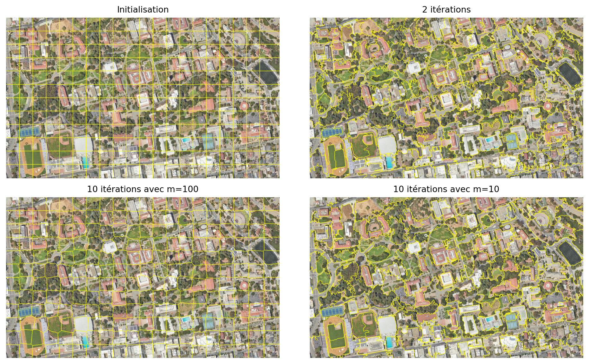
Le nombre de segments initial est probablement le paramètre le plus important. Une manière de l’estimer est d’évaluer l’échelle moyenne des segments homogènes dans l’image à analyser. On peut observer ci-dessous l’impact de passer d’une échelle 40 x 40 à 20 x 20. En prenant la moyenne de chaque segment, on peut voir tout de suite que 40 x 40 résulte en des segments trop grands mélangeant différentes classes.
from skimage import color, segmentation
n_regions = int((img.shape[0] * img.shape[1])/(40*40))
print('Nb segments: ',n_regions)
segments_slic_40 = slic(img, n_segments=n_regions, compactness=10, sigma=1, start_label=1, max_num_iter=10)
print(f'SLIC nombre de segments: {len(np.unique(segments_slic_40))}')
out = color.label2rgb(segments_slic_40, img, kind='avg', bg_label=0)
out_40 = segmentation.mark_boundaries(out, segments_slic_40, (0, 0, 0))
n_regions = int((img.shape[0] * img.shape[1])/(20*20))
print('Nb segments: ',n_regions)
segments_slic_20 = slic(img, n_segments=n_regions, compactness=10, sigma=1, start_label=1, max_num_iter=10)
print(f'SLIC nombre de segments: {len(np.unique(segments_slic_20))}')
out = color.label2rgb(segments_slic_20, img, kind='avg', bg_label=0)
out_20 = segmentation.mark_boundaries(out, segments_slic_20, (0, 0, 0))
fig, ax = plt.subplots(2, 1, figsize=(6, 8), sharex=True, sharey=True)
ax[0].imshow(out_40)
ax[0].set_title("Initialisation avec 631 segments")
ax[1].imshow(out_20)
ax[1].set_title('Initialisation avec 2526 segments')
for a in ax.ravel():
a.set_axis_off()
plt.tight_layout()
plt.show()Nb segments: 631
SLIC nombre de segments: 459
Nb segments: 2526
SLIC nombre de segments: 2201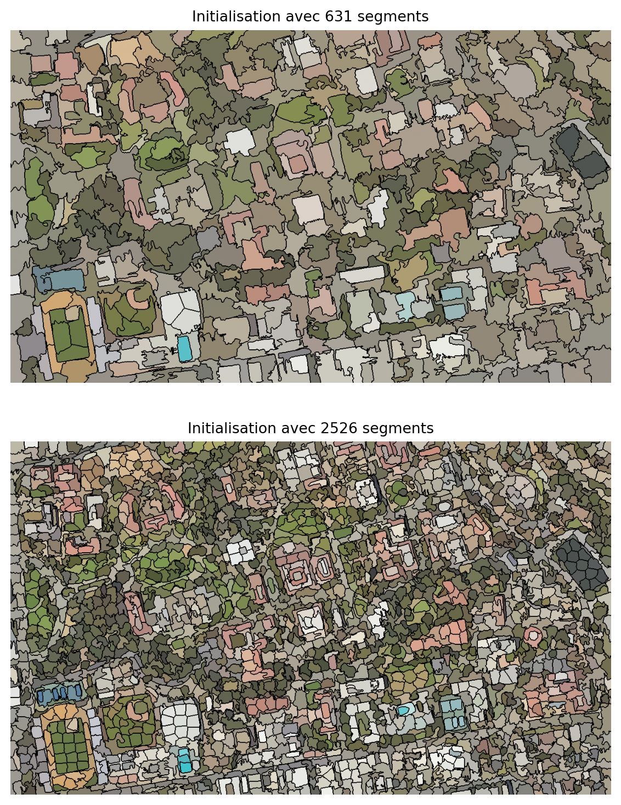
5.5.2 Fusion des segments par graphe de proximité
Une segmentation peut produire beaucoup trop de segments. On parle alors de sur-segmentation. Ceci est recherché dans certains cas pour permettre de bien capturer les détails fins de l’image. Cependant, afin de réduire le nombre de segments, un post-traitement possible est de fusionner les segments similaires selon certaines règles ou distances. Un graphe d’adjacence de régions (voir figure fig-rag) est formé à partir des segments connectés où chaque noeud représente un segment et un lien une proximité (Jaworek-Korjakowska (2018)). À partir de ce graphe, on peut fusionner les noeuds similaires à partir de leur distance radiométrique.
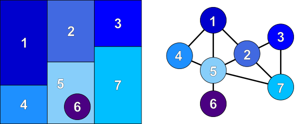
graph.rag_mean_color produit un graphe à partir d’une segmentation et de l’image originale. Chaque noeud tient la couleur de chaque segment dans un attribut appelé 'mean color'.
def _weight_mean_color(graph, src, dst, n):
"""Fonction pour gérer la fusion des nœuds en recalculant la couleur moyenne.
La méthode suppose que la couleur moyenne de `dst` est déjà calculée.
"""
diff = graph.nodes[dst]['mean color'] - graph.nodes[n]['mean color']
diff = np.linalg.norm(diff)
#print(diff)
return {'weight': diff}
def merge_mean_color(graph, src, dst):
"""Fonction appelée avant la fusion de deux nœuds d'un graphe de distance de couleur moyenne.
Cette méthode calcule la couleur moyenne de `dst`.
"""
graph.nodes[dst]['total color'] += graph.nodes[src]['total color']
graph.nodes[dst]['pixel count'] += graph.nodes[src]['pixel count']
graph.nodes[dst]['mean color'] = (
graph.nodes[dst]['total color'] / graph.nodes[dst]['pixel count']
)
g = graph.rag_mean_color(img, segments_slic_20)
print('Nombre de segments:',len(g))
labels2 = graph.merge_hierarchical(
segments_slic_20,
g,
thresh=20,
rag_copy=False,
in_place_merge=True,
merge_func=merge_mean_color,
weight_func=_weight_mean_color,
)
print('Nombre de segments:',len(g))
out1 = color.label2rgb(segments_slic_20, img, kind='avg', bg_label=0)
out1 = segmentation.mark_boundaries(out1, segments_slic_20, (0, 0, 0))
out2 = color.label2rgb(labels2, img, kind='avg', bg_label=0)
out2 = segmentation.mark_boundaries(out2, labels2, (0, 0, 0))
fig, ax = plt.subplots(nrows=2, sharex=True, sharey=True, figsize=(6, 8))
ax[0].imshow(out1)
ax[0].set_title("Avant fusion")
ax[1].imshow(out2)
ax[1].set_title("Après fusion")
for a in ax:
a.axis('off')
plt.tight_layout()Nombre de segments: 2201
Nombre de segments: 1187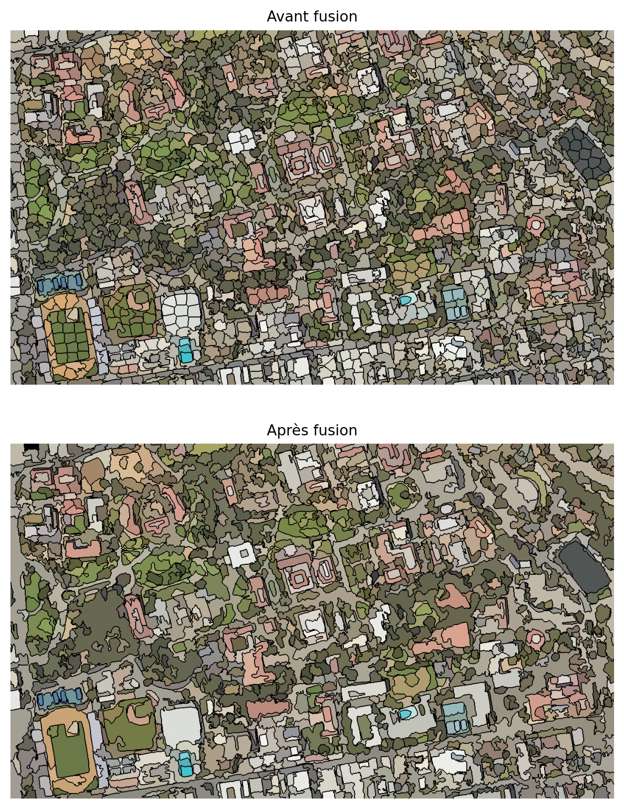
5.5.3 Approche objet
L’approche objet consiste à traiter chaque segment comme un objet avec un ensemble de propriétés. La librairie skimage offre la possibilité d’enrichir chaque segment avec des propriétés et de former un tableau:
properties = ['label', 'area', 'centroid', 'num_pixels', 'intensity_mean', 'intensity_std']
table= measure.regionprops_table(labels2, intensity_image= img_rgb.to_numpy().transpose(1,2,0), properties=properties)
table = pd.DataFrame(table)
table.head(10)| label | area | centroid-0 | centroid-1 | num_pixels | intensity_mean-0 | intensity_mean-1 | intensity_mean-2 | intensity_std-0 | intensity_std-1 | intensity_std-2 | |
|---|---|---|---|---|---|---|---|---|---|---|---|
| 0 | 1 | 641.0 | 15.466459 | 69.489860 | 641 | 136.730103 | 132.851791 | 117.126366 | 32.289547 | 31.451048 | 37.421638 |
| 1 | 2 | 480.0 | 10.997917 | 92.614583 | 480 | 201.208328 | 198.262497 | 188.483337 | 14.184592 | 14.151334 | 15.475913 |
| 2 | 3 | 712.0 | 16.683989 | 114.776685 | 712 | 185.349716 | 183.113770 | 170.994385 | 25.453747 | 26.184948 | 28.128426 |
| 3 | 4 | 1803.0 | 31.974487 | 139.379368 | 1803 | 117.897392 | 108.367722 | 97.769829 | 31.086676 | 26.577900 | 28.297256 |
| 4 | 5 | 448.0 | 5.004464 | 166.542411 | 448 | 183.511154 | 181.276779 | 167.720978 | 29.824030 | 30.625013 | 31.297607 |
| 5 | 6 | 459.0 | 9.934641 | 191.668845 | 459 | 133.557739 | 133.821350 | 129.697174 | 22.902142 | 23.013086 | 22.428919 |
| 6 | 7 | 355.0 | 5.160563 | 222.895775 | 355 | 148.574646 | 148.802811 | 142.580276 | 21.334805 | 21.457472 | 20.931572 |
| 7 | 8 | 334.0 | 4.904192 | 255.904192 | 334 | 125.973053 | 121.197601 | 108.973053 | 23.151978 | 24.556480 | 25.351229 |
| 8 | 9 | 1481.0 | 32.279541 | 292.865631 | 1481 | 204.102631 | 172.359894 | 137.501007 | 13.884891 | 14.092896 | 15.865581 |
| 9 | 10 | 445.0 | 8.013483 | 308.053933 | 445 | 145.373032 | 138.182022 | 121.402245 | 18.543356 | 18.644655 | 22.237881 |
Ce tableau pourra être exploiter pour une tâche de classification par la suite (on parle alors de classification objet).
Achanta, Kevin Smith adhakrishna, Appu Shaji et Sabine Süsstrunk. 2012. « SLIC Superpixels Compared to State-of-the-art Superpixel Methods. » TPAMI: 636‑643. https://doi.org/10.1109/TPAMI.2012.120.
Cooley, James W. et John W. Tukey. 1965. « An algorithm for the machine calculation of complex Fourier series. » Math. Comput.: 297‑301. https://web.stanford.edu/class/cme324/classics/cooley-tukey.pdf.
Jahne, Scharr, B et Korkel S. 1999. Principles of filter design. Handbook of Computer Vision; Applications; Academic Press.
Jaworek-Korjakowska, P., J.; Kłeczek. 2018. « Region Adjacency Graph Approach for Acral Melanocytic Lesion Segmentation. » Applied Sciences 8: 1430. 10.3390/app8091430.
Lee, J. S. 1986. « Speckle suppression and analysis for synthetic aperture radar images. » Opt. Eng. 25 (5): 636‑643. https://doi.org/10.1117/12.7973877.